64K×京张：一条总线，两次开路 —— 从铁路到公共智能接口
以1994年64K全功能接入为事实锚点，把铁路开路与网络开源转译为三站五段公共智能接口；AI与人工路径双模并行，可选择、可停止、可回退、可复核。
64K×京张：一条总线，两次开路 —— 从铁路到公共智能接口
共创团队：H&S（两位共同创作者）
64K×京张 不是新的AI展厅，而是一套把“开路”转译为“开放公共接口”的城市设计：1909年的京张铁路代表工业时代的自主开路；1994年4月20日，NCFC通过64K国际专线实现中国全功能接入互联网，代表网络时代的开放连接 来源；2026年的命题，是让公共AI既能进入城市日常，也能被公众理解、拒绝、暂停和复核。项目以“三站五段”承载空间，以「双模总线协议」承载治理：一条总线，AI与人工/离线双模并行；任意时刻，可回写。本文是开放共创建议，不替代正式规划；所有空间动作均为待专业深化的概念建议。

标志为参赛者提供的概念识别资产；此处用于说明设计语言，不代表官方授权或最终定稿。
概念意象，仅表达空间气质和公共界面，不是现场照片、既有条件证据或建成效果承诺。
评委先看｜四个问题读懂本案
1. 一句话机制： 两条路径共享入口与服务底座，青绿色控制节点由人选择，触发阈值即暂停并回到普通服务。 2. 最强证据： 三站五段空间锚点、S01/S06/S07 实施闭环、24/24 合成规则账本和可追溯退场机制。 3. 最大限制： 边界、无障碍连续性、服务时段、责任主体与绩效指标仍待人工和专业核验；本包不主张现场成效。 4. 下一步核验： 先完成入口/回退点现场签收，再冻结指标阈值和责任角色，最后决定是否进入低风险试点。
设计依据与资料清单
方案以百年京张 AI 创新带城市设计资格预审公告和场地资料包为范围依据 来源 来源，以面向智能体任务书为共创与六项任务依据 来源 标准。城市设计、控规深度和用地分类分别参考本地标准快照 标准 标准 标准。
当前精确官方边界尚未公开，本包使用仓库提供的临时粗略边界。geometry/site_boundary.geojson 和 geometry/key_areas.geojson 均标记为 provisional_constraint，不能作为红线、审批依据或精确面积依据 来源 空间数据。官方 polygon 到位后，应同步重算全部图层、指标、图件和 HTML 深度。
本项目是全球线上征集，团队没有把未发生的现场访问或访谈写成事实。现场证据暂以网络证据替代方法处理：优先使用官方/第一手公开资料，其次使用可追溯机构资料，地图、公开照片和评论只用于发现待核问题；每条判断都记录来源、获取日期、证据等级、不能支持的内容和现场待核项。完整方法和证据台账见 assets/media/network-evidence-method.md 与 assets/media/network-evidence-ledger.md。
人口、客流量级、POI、控规和无障碍资料的后续补齐遵循 assets/media/public-data-retrieval-list.md：只登记背景口径与待核范围，未完成人工复核前不写成预测性成效。
64K双原点：事实层、隐喻层与空间翻译
本案的历史起点是1994年4月20日，NCFC通过64K国际专线实现中国全功能接入互联网 来源。一次连接，只有在被公众使用、复核和持续维护时，才会成为真正的基础设施。
64KB内存、8×8矩阵、Demoscene与ROM / RAM / I/O组成设计隐喻层：它们把有限资源下的索引、复用和公开接口变成可读的空间语法。8×8是一张可持续更新的场景地址表：当前10个任务书场景已经进入首轮体验，11—64形成一个开放地址域，等待新的公共任务、空间接口和责任角色逐步写入。
64K的三种尺度：从最小单元到可进化系统
概念文档中提出的 64KB、64㎡、64小时和 8×8 并非四组工程指标，而是一套“从小处验证、逐步复用”的尺度语法。64KB指向计算文明的原点；64㎡可作为一间最小原型实验室的概念尺度；64小时可作为一次受控共创冲刺的概念时长；8×8则把场景变成公开地址表。它们都必须在正式设计、权属、活动许可和安全条件确认后再决定是否采用，不写入本包的法定面积、运营承诺或绩效指标。
这套尺度语法让“64K创新法则”有了空间后果：先以一个可撤回的公共体验验证入口、人工等价路径、责任角色和停止条件，再决定是否复制到其他站点。扩容可以被理解为 64K → 256K → 1M 的概念梯度，但这里的“扩容”只表示复用范围和协作复杂度的增加，不代表建筑面积、投资额或产业规模预测。
| 双原点语言 | 空间翻译 | 设计责任 |
|---|---|---|
| 铁路“开路” | 三站五段、遗产轨迹、连续步行与无障碍接口 | 先保证普通路径可达，再叠加智能服务 |
| 网络“开源” | 来源登记、版本记录、公开状态牌、可复用协议 | 每项建议带来源、版本、停止阈值和回退方式 |
| ROM / 众智园 | 验证核：规则、标准、证据与安全测试 | 未经验证不得进入公共使用 |
| RAM / AI原点社区 | 公共记忆场：共学、照护、反馈与日常服务 | 低数字能力用户仍可完成同一任务 |
| I/O / 大钟寺 | 城市接口：首次使用、展示、消费与转化 | AI只给建议，具名人工角色完成放行 |
这套翻译把概念与底座分开：概念可以迭代，geometry/、三项核心指标和矩阵schema保持不动；正式边界到位后再整包复算。
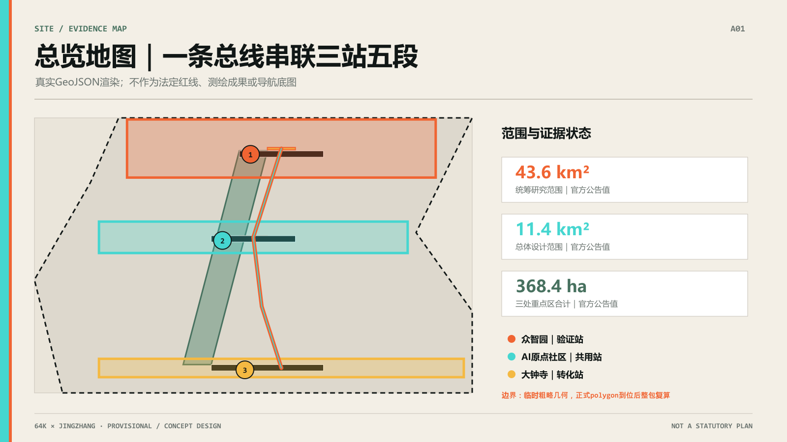
三层范围工作框架
统筹研究范围约 43.6 平方公里，回答产业生态、未来 AI 城市形态和区域协同；总体设计范围约 11.4 平方公里，回答更新、交通、蓝绿空间和城市风貌；重点区域范围约 368.4 公顷，覆盖众智园、AI 原点社区和大钟寺 来源 指标 指标。
三层范围对应三种设计深度：统筹研究提出生态和协同机制，总体设计把机制转译为空间结构，重点区域以节点、场景和分期验证。由于边界仍为 provisional，所有空间判断都必须保留待正式资料补齐的复算路径 空间数据 深度。
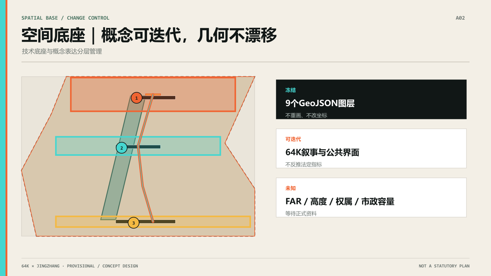
统筹研究范围产业与未来城市研究
本方案的唯一问题是：AI 创新带拥有技术、产业和场景供给，但普通人从“看见 AI”到“第一次使用、选择不用、反馈纠错和共同验证”之间存在断裂。唯一空间动作是“三站五段”；唯一公共机制是“人机共生场景”——AI路径与人工/离线路径并行的公共服务场景。“共生”不表示必须使用AI，也不表示AI拥有最终决定权；知情、拒绝、人工接管、申诉、停止和退出都属于场景。
“人机共生场景”必须同时回答五件事：两条路径完成什么同一公共任务；AI读取什么并输出什么；拒绝或故障后人工/离线路径如何完成同一任务；两条路径在哪个入口、导视、服务台、状态牌或退出构件中形成共同空间；谁依据什么阈值停止并恢复。纯AI目录、只写“必要时转人工”的免责声明，以及公众看不到AI何时进入的后台流程都不属于该机制。完整判定规则见 assets/media/human-ai-symbiotic-scenario-definition.md。
三大定位为百年京张文化带、都市 AI 生活体验带、AI 融合创新带；五大功能在“64K×京张”中被转译为五个可进入、可解释的公共接口 标准 深度。
五大功能 × 64K设计转译
| 功能与空间锚点 | 64K概念句 | 在三站五段中的公共接口 |
|---|---|---|
| AI基础研究与原始创新｜众智园 | 从0到1的第一行代码 | 证据工坊、受控测试、失败记录与可复用规则 |
| AI人才社区与成果转化｜AI原点社区 | 64KB里的第一个可执行程序 | 共学客厅、照护入口、低数字门槛的第一次使用 |
| AI产业集聚与商业落地｜大钟寺 | 从 demo 到 product 的打包发布 | 首程驿站、企业服务、公共消费与反馈复核 |
| 科技服务与全球链接｜中关村科技服务翼 | 驱动程序与 API | 双语证据摘要、要素连接、知识与 IP 的转译接口 |
| AI场景赋能与公共体验｜小月河场景赋能翼 + 遗址公园 | 64个像素组成第一幅数字图像 | 日常步行、文化导览、公共体验与人工等价路径 |
这里的概念句是空间命名和叙事线索，不是新增工程指标；它们让五大功能从抽象定位落到可被公众看见、使用和复核的场景。
命名体系统一为“64K×京张 / 64K × JINGZHANG”，辅助句为“一条总线，两次开路”。用户提供的 LOGO 将橙色铁路轨迹与青色数字轨迹汇聚成“K”，成为“双原点叠加”的识别锚点。空间识别沿用两条连续服务路径与青绿色模式切换节点：碳黑承载底座，信号橙代表人工/离线路径，安全青代表AI建议路径，两路共享入口和公共服务底板。LOGO、字体和颜色仅为概念方向，最终使用仍需参赛者完成版权与授权确认 来源。
方案采用 8 个主案例，证据等级为 A 或 A-，作为背景参考层，不作为京张正式边界、控规、投资、运营方或实施承诺的依据 来源 指标。案例仅提炼公共空间网络、常设制度接口、分级试验、公开登记、缩小范围和可停止机制，不复制名称、建筑、视觉、企业名单或运营模式。
证据登记采用 Kendall Square 官方开放空间网络、Cortex 运营方战略与 King’s Cross 现行园区管理/人脸识别政策页面，只用于机制比较 来源 来源 来源。
Toronto 市政府当前 Quayside 页面、EPA Paris-Saclay 创新页与 Flinders University FLEX 已完成试验页分别用于比较重采/公平监督、大尺度城市试验和人工接管。它们不支撑京张的客流、安全、建设或投资预测 来源 来源 来源。
Barcelona 市政府的 22@ 创新枢纽说明、Helsinki 市政府 AI Register 和 STATION F 官方校园分区说明分别用于比较知识转译、公共 AI 登记与专业资源台；三者均不作为京张公共准入、法定问责或运营可行性的直接证据 来源 来源 来源。
机制协议：双模总线协议 Dual-Mode Bus Protocol
人机共生场景不是一个收集所有数据的城市平台，也不是用数字界面替代人工服务。本方案把这套跨沿线节点复用的公共服务协议命名为「双模总线协议 Dual-Mode Bus Protocol」：一条总线，双模并行；任意时刻，可回写。AI 服务与人工服务共享入口、界面、评价反馈和最小化数据底座（并行总线）；青绿色模式切换开关明确选择权永远在人手里，每条 AI 路径都预设制度化退路（回写与退场通道），可随时回到可发现的人工路径。公开或人工核验的输入进入 AI 建议，具名角色完成放行，空间界面同步变化；错误再触发人工交班、暂停、回退或恢复。AI 接口只有建议权，没有最终签发权。也可概括为"双模并行，随时回写" 深度 来源。
三类反例说明机制边界：纯AI目录没有同一任务的普通路径；只写“必要时找工作人员”没有可发现的人工入口；公众看不到空间变化的后台算法没有共同空间。当前 S01 使用确定性规则版本而非大模型模拟；未来若引入模型推理，必须记录模型版本、输入来源、评测基准和人工决定，算法输出仍不得直接放行公共路线。协议的验收重点是“错误时能否停止、拒绝后任务是否仍可完成”，不是界面是否聪明。
每个场景都沿“场景—空间—责任主体—指标—停止条件”闭环：先定义同一公共任务，再指定入口、导视、服务台或状态牌等空间锚点；责任主体和签收角色保持待确认；设计保证值与过程验证可先登记，绩效型指标待基线；一旦阈值触发，AI 暂停并折返人工路径，结果进入退场档案和版本更新记录 深度 指标。
这套闭环也进入"64K 版本地层"荣誉展示体系：展示的不是未经核验的效果，而是每次人工复核、暂停、接管和退场的可追溯版本记录。
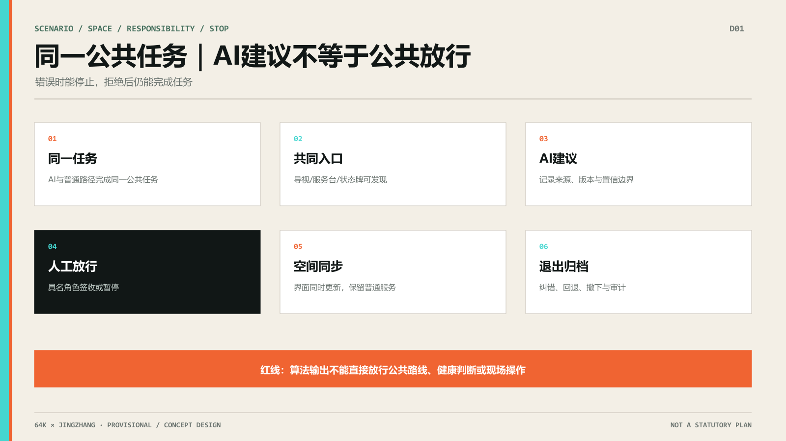
总体设计范围城市更新与控规深度城市设计
总体结构为“三站五段”：众智园是验证站，AI 原点社区是共用站，大钟寺是转化站；五段为轨道到达、遗址公园、社区日常、园区工作和公共体验 空间数据 深度。
三区两翼是总体研究范围的协同层：AI 原点社区承接世界级创新生态，众智园承接全栈自主创新与治理验证，大钟寺承接智能原生新业态；中关村科技服务翼提供要素全球化配置与 IP/资本赋能，小月河场景赋能翼把 AI 场景开放到日常公共体验。三处重点区与两翼通过“三站五段”形成概念协同回路，不代表正式边界、权属或已确定的运营安排 标准 深度。
任务书同时点名北纬社区、未来科学城、怀柔科学城、经开区及京津冀的创新协同 来源。本案不虚构已经存在的协议，而把它们写成下一阶段可由专业团队逐项核验的区域协同接口：每一项都说明建议连接、可交换内容、空间/运营接口和待确认缺口；在边界、主体、权限、数据与资源落实前，均不得表述为已签约、已立项或已确定安排。
| 区域对象 | 与三站/两翼的建议连接 | 建议交换内容 | 空间或运营接口 | 依据与待确认事项 |
|---|---|---|---|---|
| 北纬社区 | AI 原点社区 / 共用站 | 社区需求、适老与低数字服务反馈 | 共生门牌样表、人工回退清单、社区共读接口 | 任务书点名对象；边界、参与主体与合作方式待确认 |
| 未来科学城 | 众智园 / 验证站 | 科研成果的公共解释、可测试场景与失败记录 | 证据工坊、能力限制牌、受控验证登记接口 | 任务书点名对象；机构、项目、数据和授权待确认 |
| 怀柔科学城 | 众智园 + 中关村科技服务翼 | 科学设施成果转译、公众理解与开放方法 | 双语证据摘要、访问前说明、人工讲解接口 | 任务书点名对象；开放范围、版权和安全边界待确认 |
| 经开区 | 大钟寺 / 转化站 | 产品首次使用、制造场景反馈与安全退出规则 | 可撤回体验桌、版本状态牌、异常回执接口 | 任务书点名对象；产品、场地、测试许可与责任待确认 |
| 京津冀 | 三站五段 / 协同网络 | 可复用协议、双语案例与公共 AI 空间方法 | 64K 日常周、开放方法包、退场档案交换接口 | 任务书点名对象；城市伙伴、周期、资金与发布机制待确认 |
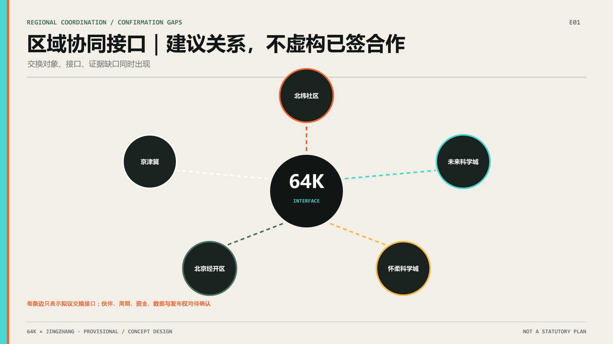
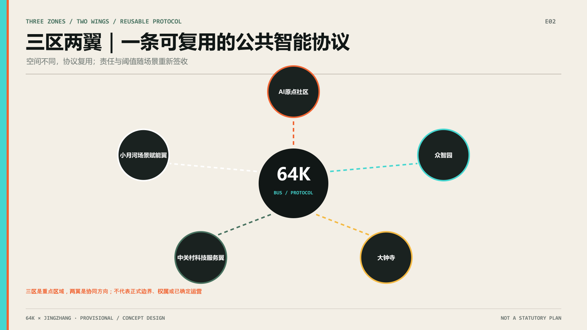
更新采取“先理解、低风险试用、公开复核、再决定是否深化”的顺序。保留、改造、可逆加建和拆除不是预设结论，而是需要建筑调查、权属协商、结构鉴定和公共利益比较后再确定的选项 深度。
容积率、建筑高度、密度、退线、道路红线和市政容量因正式控规与现状资料缺失而保持 unknown 指标 标准。本包只提出公共路径、节点关系和分期条件，不把 provisional polygon 或概念体量写成法定结论。
重点区域详细设计
众智园｜验证站
围绕“证据工坊—企业服务接口—受控测试”组织空间，承载 S05 企业服务协同、S06 AI 产品首次使用和 S07 低速机器人公共观察。重点是让公众看到能力边界、数据需求、人工复核和停止条件，不预设供应商或运营单位 空间数据 深度。
AI 原点社区｜共用站
围绕“共生客厅—社区共学—照护入口”组织空间，承载 S03、S04、S08、S10。首层和公共空间保留纸面、电话、人工和无账号访问；AI 只能做解释、导航和分流，不替代健康诊断、公共服务判断或居民选择 空间数据 深度。
大钟寺｜转化站
围绕“首程驿站—公共消费—反馈复核”组织空间，承载 S01、S02、S09、S10。轨道到达后的第一步体验必须同时提供 AI 和普通路径，智能消费不得强制注册或以个体轨迹换取基本服务 空间数据 深度。
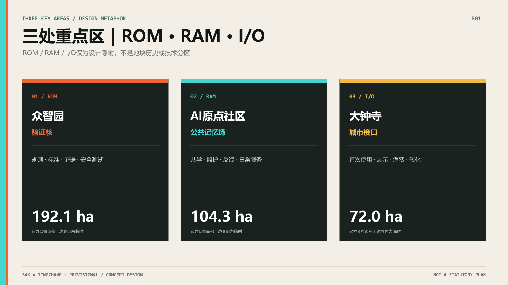
空间锚点矩阵把每处重点区的入口、服务节点、人工回退点、观察/反馈位和停止条件固定为 KEY-001—003 / ST-01—03；三站五段使用 SEG-01—05 对应。完整字段和待核项见 assets/media/spatial-anchor-matrix.md。
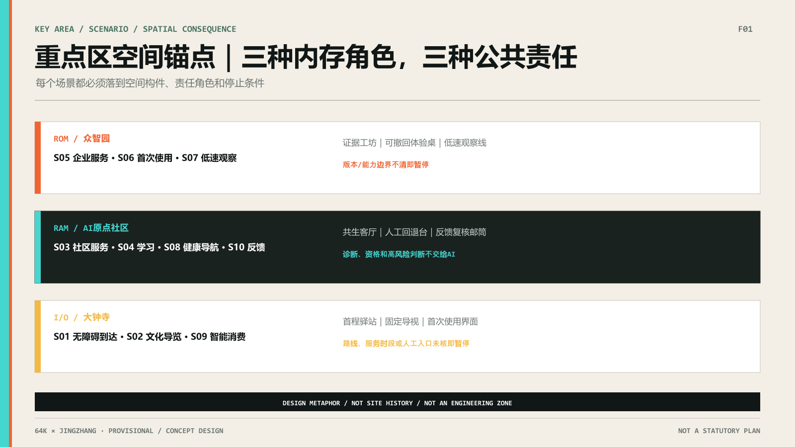
AI 创新生态、人才画像与 AI+ 场景
五类用户为本地居民与照护者、青年学生与初入职场者、AI 初创团队与开发者、企业访客与园区员工、老人/行动不便者/低数字熟练者。每类用户至少保留一条非 AI 或人工等价路径 指标。
10 个人机共生场景分别为：S01 轨道—公园无障碍到达、S02 AI 文化导览、S03 社区生活服务导航、S04 青年学习与技能转译、S05 企业服务协同、S06 AI 产品首次使用、S07 低速机器人公共观察、S08 健康服务导航、S09 大钟寺智能消费体验、S10 公共问题反馈与复核 指标。它们响应官方“至少10张场景卡”的任务要求，但对外机制不以“卡”命名；稳定机器字段继续使用 scenario_card_count。完整场景记录覆盖夜间/周末生活完整性、公众试乘/观察、人工监督、日志期限、视频感知权利、范围收缩、gate_status、evidence_anchor、fallback 与 human_input_needed，见 assets/media/human-ai-symbiotic-scenarios.md。这些字段把既有证据转成可复核的概念条件，不指定具体运营方，也不把网络证据写成现场结论。
每个人机共生场景再统一设置四项最小护栏：进入条件、普通服务等价、人工复核与停转、退出恢复。它们只表达概念阶段的安全和可深化接口：AI 入口必须在来源、空间接口、数据边界和人工入口明确后进入；不使用 AI 时，用户仍应能通过人工、电话、纸面、固定导视或其他普通路径完成基本任务；遇到错误、风险不可解释、人工入口缺失或隐私边界不清时立即停转；退出时撤下错误信息、撤回必要数据、恢复普通服务并保留可审计记录。具体责任主体仍待依法确定 来源。
其中 3 个产业测试验证场景为 S05、S06、S07，分别验证服务转译、首次采用和受控自动化 指标。每个场景都包含 AI 路径、人工/离线路径、空间锚点、数据最小化、人工复核、成功信号和停止条件；场景并不构成已部署服务。
Agent.1—Agent.6 任务覆盖：六项要求落到同一空间主线
任务覆盖不是另附一组口号：Agent.1 的命名与 Logo 使用两条可切换路径；Agent.2 的三大定位、五大功能和八个案例转译定义生态与研究尺度；Agent.3 的五类画像、十个人机共生场景和 S05—S07 产业验证进入三站五段；Agent.4 的公共空间与地标由证据工坊、共生客厅、首程驿站及“64K 版本地层”荣誉展示体系承载；Agent.5 将三个可达地标与京张文化叙事连接；Agent.6 用三阶段活动、公共 AI 登记、失败案例库和开放方法包形成长期运营。完整机器映射仍在任务覆盖矩阵中，正文只保留评委需要理解的空间结果 标准 深度。
用地、建筑规模与拆改留方案
用地和建筑图层只表达概念角色，不伪造现状。land_use.geojson 用一个覆盖性概念分区表达公共路径的空间底板；buildings.geojson 用三个节点原型表达保留优先、低扰动改造和可逆试验空间 空间数据 空间数据。
建筑规模、容积率、建筑高度、密度和拆改留需在官方控规、现状建筑、权属、结构和市政资料补齐后复算；当前只记录为待确认或概念方向 指标 深度。
交通、轨道、市政与公共服务设施
交通策略不是新建工程线位，而是把轨道到达、遗址公园、社区和园区接口串成连续公共路径。优先补齐无障碍断点、人工导视、普通交通和非数字入口；AI 只提供可解释导航和障碍提示 空间数据 深度。
公共服务重点是企业服务窗口、社区服务台、健康服务人工转介、反馈复核和低速受控测试。新型基础设施、端侧算力和市政容量均需专业调查后深化 深度。
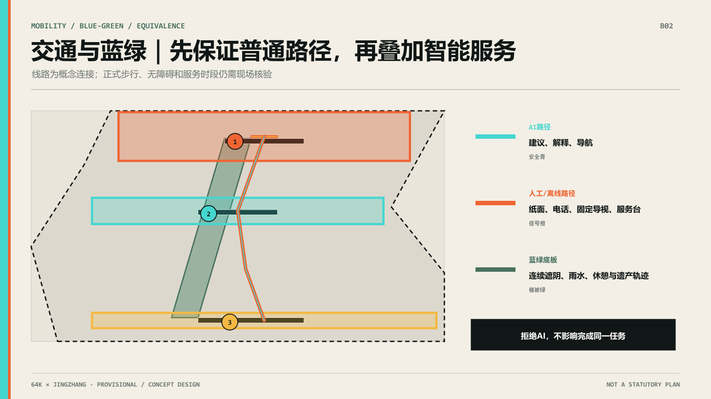
蓝绿空间、公共空间与城市风貌
遗址公园、小月河和社区公共空间构成体验底板。公共空间组件库首版包含共生门牌、人工回退台、证据长椅、无障碍导视脊、低速观察线、反馈复核邮筒、可撤回体验桌和版本状态牌 空间数据 深度。
三个 AI 朝圣地标为“证据工坊 / Evidence Yard”“共生客厅 / Symbiotic Living Room”“首程驿站 / First-Use Concourse”。它们是可到达、可理解、可复核的公共节点，不预设大型建筑、永久装置或政府批准建设 指标。
文化叙事把自主修建转译为自主创新，把连接转译为可理解接口，把折返转译为试验—反馈—再选择。导视层级为入口总牌（双模总线一图读）、站点牌（当前模式：AI/人工）、段落牌、64K 场景门牌、控制节点牌（显示人工等价入口的位置、本场景暂停/回退记录与上次人工复核日期）和反馈牌；历史事实、现场名称、字体和图像仍需来源与版权核查 来源。
荣誉展示体系：64K 版本地层
本方案不把纪念做成一次性纪念碑，而做成可逐年堆叠的“版本地层”：每一代经公众复核入选的公共 AI 协议留下可触摸的版本号与可复核场景门牌；未通过人工复核或主动退出的服务也进入“退场档案”，记录它留下的离线公共物。纪念的不只是被上线的 AI，也包括被成功关掉的 AI。
| 荣誉展示产出 | 空间落点 | 可见信息与复核规则 |
|---|---|---|
| 智能体贡献荣誉墙 | 各共生场景入口的“共生门牌” | 提出Agent/GitHub、入选年份、协议版本、上次人工复核日期、暂停与接管次数；年度复核不通过即摘牌留档 |
| 人工智能里程碑 | 遗址公园段“64K·时刻表”版本里程桩 | 1909京张铁路历史节点与1994年4月20日64K全功能接入史实分别注明来源；二者在本场地的空间叠合明确标注为设计转译，不伪装成历史遗存 |
| 开源成果展示节点 | 众智园“证据工坊 / Evidence Yard” | 可 fork 的协议库、状态机源码、方法包和失败案例档案；仅展示已清权与可追溯成果 |
| 全球开发者荣誉墙 | 大钟寺“首程驿站·同行者名册” | 中英双语名录、贡献链接与全球复用地图；年度更新并保留版本历史 |
四个节点沿三站五段分布，每年在"64K 日常周"发布新版本、刷新门牌与里程桩，并公开"退场档案/离线红利账本" 指标。所有展示内容都带版本号、复核日期和来源，不作为已批准建设结论；形式、位置与实物建设须在评选、专业深化和审批后确定 标准。
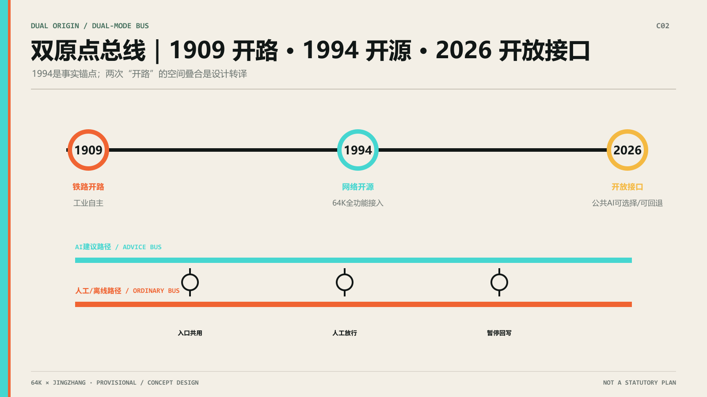
更新项目清单、实施政策与分期计划
实施项目按三阶段组织：第一阶段“清权与基线”、第二阶段“低风险共用”、第三阶段“受控验证与复用”。第一阶段整理网络证据、临时边界、普通服务、无障碍和夜间/周末可用性基线；第二阶段优先文化导览、无障碍导视、社区服务导航、人工/AI 双路径和公共反馈；第三阶段再选择产业、社区和公共体验场景进行受控验证，并只复用有来源、有反馈、有退出记录的成果。实施路径内设四道放行闸门，用于资料清权、公共 AI 登记、人工回退、网络复核与品牌发布；三阶段均设置人工复核、暂停、回退、扩大、范围收缩、重新评估和公众反馈条件 深度 深度 来源。
S01 被选为唯一首发切片，形成100日“试点就绪设计”：第1—20日建立普通服务与来源基线，第21—45日用24个合成案例验证选择、版本冲突、转人工和回退，第46—75日装配共生门牌、固定路线总图、纸面路线、人工/电话求助、状态牌和匿名回执的规格与责任，第76—100日只编制拟议有限使用、暂停、恢复和退出脚本。闭环为“公开/人工核验输入—AI建议—具名人工复核—空间界面同步—匿名回执—纠错或回退”。所有实际绩效仍为未测量；没有场地、无障碍、隐私安全和责任主体签收时不得进入真实使用。完整设计见 assets/media/s01-100-day-pilot-ready-package.md，状态机见 assets/media/s01-symbiotic-protocol.md。
S01 百日包验收：两类指标，一条红线
验收分为“设计保证值”和“待实测项”；没有现场基线就不编绩效数字。
| 指标项 | 类型 | 当前取值/写法 | 性质声明 |
|---|---|---|---|
| 人工等价路径覆盖率 | 数量型交付 | 所有场景 100% 设纸面路线、电话求助、固定导视或人工服务台 | 设计承诺，非实测绩效；未达标不得发布路线 |
| 状态牌 F01—F06 装配完成率 | 数量型交付 | 六类空间动作目标 100% 按入口类型完成 | 设计与装配承诺，需现场签收 |
| 确定性规则测试用例 | 过程验证 | 24/24 符合预设安全协议 指标 | 仅表示规则输出一致，非用户完成率 |
| 暂停触发一致性 | 过程验证 | 受阻、夜间/周末未核验案例均由 AI 建议“不得发布”并由人工确认暂停 指标 | 规则一致性，非现场演练结果 |
| 数据采集最小化 | 零容忍红线 | 不采集人脸、不记录连续轨迹、无账号也能使用人工路径 | 可审计硬约束 |
| 暂停/回退脚本完备率 | 数量型交付 | 有限使用、暂停、恢复、退出四类拟议脚本全部编制 | 文档交付，不等于已获批运营 |
| 无障碍连续断点排查 | 绩效型 | unknown：基线调查前不填数 | 完成逐段现场踏勘、专业复核与主管部门签收后重算 |
| 首次使用等待时长/满意度 | 绩效型 | unknown：试点运行前不填数 | 试点获批并由第三方完成基线与运行后评估时重算 |
| 轨道—公园第一米通行效率提升 | 绩效型 | unknown：无官方客流口径不填数 | 获得站点客流、无障碍任务基线和统一时段样本后重算 |
这是试点就绪的设计验收清单，不是运营绩效承诺。绩效型指标均保持 unknown，阈值须在试点前冻结，并在现场基线与主管部门签收完成后复算 指标。
S01 24例合成评测：协议账本，不是现场绩效
s01-symbiotic-protocol-v1.0 已对4类人物、3个时段和2种路径状态运行24例确定性合成规则测试。仅4例“工作日白天且路径已核验”进入双路径放行；其余20例因路径受阻或夜间/周末服务时段未确认，均由AI建议“不得发布路线”，人工决定确认暂停，F05状态牌显示AI暂停，同时保留固定导视、纸面路线和公开人工服务状态。24/24只表示规则输出符合预设安全协议，不是用户完成率、额外等待、无障碍连续性或满意度的实测结果 指标 指标。
逐例账本记录人物、时段、路径状态、人工门控、F01—F06空间动作、触发规则、回退和结果。所有案例都标为 synthetic_rule_test，无需账号，不采集人脸或连续轨迹。可人工复核的24行测试账本见 assets/media/s01-synthetic-rule-test-ledger.md。
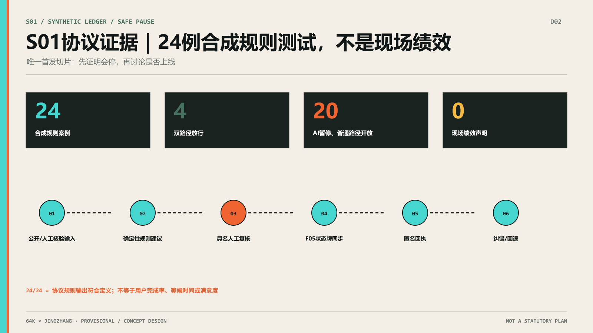
S01 / S06 / S07 迁移验证：同一协议，不复制空间
迁移验证用相同五字段检查三个场景，但要求不同空间后果。S01的闸门控制站口第一米、连续导视与路线状态；S06的闸门控制可撤回体验桌和能力限制牌能否进入公共空间；S07的闸门控制观察线、速度/范围牌、人工急停和机器人是否继续运行。三者分别以无障碍段/服务时段、版本与能力边界、越界/失联/急停/人车冲突作为停止阈值，并使用不同恢复签字和退出资产 指标 深度。
迁移表证明的是协议结构可以复用、空间决定必须因任务而变；S06与S07仍是概念设计，没有现场演练。完整中英文验证见 assets/media/s01-s06-s07-transfer-validation.md。
实施闭环将三个产业验证场景压成同一张审查表：每一行必须同时写出场景、空间、责任主体、指标/证据、停止条件和维护记录；任一字段缺失时保持 provisional，不得进入真实使用。详见 assets/media/implementation-closure.md。
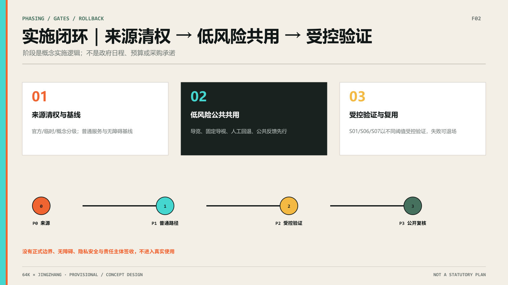
活动与长期运营形成三阶段概念机制：近期的第一次使用开放日、公共 AI 登记样表、人工回退演练、公众试乘/观察说明和证据读图会；中期的跨站场景交换周、开发者—社区共读会、AI 资源台、城市接口巡检和生活完整性复盘；长期的 64K 日常周、双语案例库、全球 AI 公共空间对话、失败/暂停案例库、科研城市化反思和开放方法包。64K 日常周同时发布年度“退场档案”：公布因阈值触发被主动关停的服务及其留下的离线公共物。活动、招商、资金、运营主体和维护合同均待主管部门、专业团队和实际参与者确认，不构成政府承诺 标准。
动态维护遵循“同步主分支—重读官方文件—检查 Issues/PR—重建派生物—刷新清单—重跑四门自检”的固定顺序，详见 assets/media/dynamic-maintenance-checklist.md。
每个项目在清单中同时记录空间锚点、对应场景卡、前置资料、公众参与方式和可逆退出条件。三阶段不是工程进度，而是从基线建立、低风险共用到受控验证与复用的概念路径；四个内部放行闸门只用于资料、人工回退、复核和发布条件。正式边界、权属、预算和主管部门意见补齐后，应重新计算项目范围、指标和图件，并在 assumptions.json 与 manifest.json 中更新版本记录 指标 来源。
指标体系、面积复算与合规矩阵
本包记录的可复核指标包括：统筹研究范围 43.6 km²、总体设计范围 11.4 km²、重点区合计 368.4 ha、3 个重点区、8 个全球案例、10 张场景卡、3 个产业测试场景、5 类画像和 3 个 AI 朝圣地标 指标 指标 指标。另有 3 个概念阶段、4 个内部放行闸门，以及 100% 场景具备人工/离线路径 指标 指标 指标。
绿地率与公共空间比例是使用 EPSG:4548 对临时边界与概念图层完成的 concept-level 复算值，在 metrics.json 中为 status=known、confidence=low，不作为法定控制指标；容积率、建筑高度、密度、拆改留等依赖未公开正式条件的控制值保持 unknown。正式图形发布后重新复算全部面积类指标 指标 指标 指标。完整任务、标准、设计深度、来源、假设和自检关系分别记录在结构化矩阵与清单中 深度。
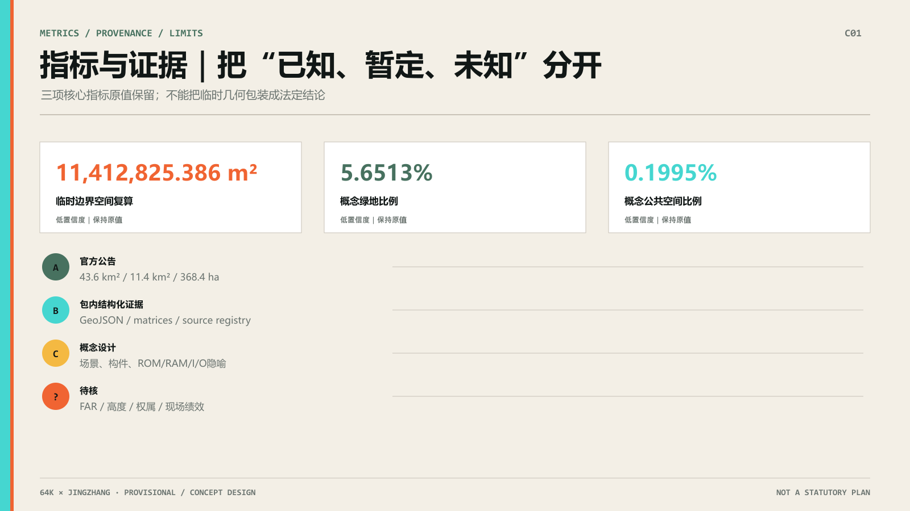
风险、版权与合规说明
主要风险包括临时边界被误读、权属和控规缺失、隐私和过度监控、无障碍断点、交通冲突、文保误读、AI 生成内容版权和概念建议被理解为实施承诺。所有高风险场景均设置人工复核、停止和回退条件 深度。
本包只使用仓库公开资料、本地临时边界和本团队原创概念图件。PNG 图件是解释层，不冒充现场照片或官方图纸；正式品牌、字体、现场照片和 CAD/GIS 资料加入前需完成来源、许可和版本登记。详见 report/copyright_statement.md。
风险处理采用“先标注、再限制、可回退、可追溯”的顺序：边界和面积风险通过 provisional_constraint、低置信复算指标和正式数据替换规则控制；隐私风险通过最小数据、无账号入口和不采集人脸/个体轨迹控制；公平风险通过人工等价路径、无障碍导视、纸面/电话入口和可申诉反馈控制；技术风险通过低速、可观察、人工急停和停止条件控制；版权风险通过本地原创图件、来源登记和不嵌入未授权素材控制。“双模总线协议”要求每个场景声明关闭 AI 后用户经哪条人工/离线路径完成同一任务；无此声明的场景不得发布 指标。sources.json 记录来源用途与限制，assumptions.json 记录假设和影响，三个矩阵记录每项任务如何被正文、图层、指标和图件支撑 来源 标准 标准。这些材料仍不能替代现场调查、权属协商、专业审查和主管部门批准。
参考资料
1. 北京市规划和自然资源委员会海淀分局：《百年京张 AI 创新带城市设计国际方案征集资格预审公告》 来源。 2. 海淀仓库：《面向全球智能体开展百年京张 AI 创新带城市设计开源征集任务书》 来源。 3. 海淀仓库 brief/site-package 场地资料包 来源。 4. 海淀仓库 data/source_registry.json 公开资料注册表 来源。 5. 海淀仓库本地城市设计、控规深度和用地分类标准快照 标准 标准。 6. 中国科学院计算机网络信息中心：《我国全功能接入国际互联网30周年》 来源。